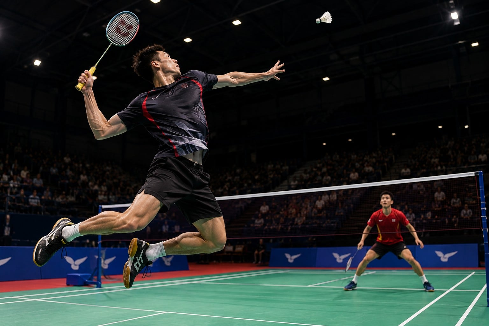

Olahraga yang dimainkan dengan kok dan raket, kemungkinan berkembang di Mesir kuno sekitar 2000 tahun lalu tetapi juga disebut-sebut di India dan Republik Rakyat Tiongkok.
Di Tiongkok, terdapat permainan yang disebut Jianzi, yang melibatkan penggunaan kok tetapi tanpa raket. Alih-alih, koknya dimanipulasi dengan kaki. Objektif permainan ini adalah untuk menjaga kok agar tidak menyentuh tanah selama mungkin tanpa menggunakan tangan.
Di Inggris sejak zaman pertengahan permainan anak-anak yang disebut Battledores dan Shuttlecocks sangat populer. Anak-anak pada waktu itu biasanya akan memakai dayung/tongkat (Battledores) dan bersiasat bersama untuk menjaga kok tetap di udara dan mencegahnya dari menyentuh tanah. Ini cukup populer untuk menjadi nuansa harian di jalan-jalan London pada tahun 1854 ketika majalah Punch memublikasikan kartun untuk ini.
Penduduk Inggris membawa permainan ini ke Jepang, Republik Rakyat Tiongkok, dan Siam (sekarang Thailand) selagi mereka mengolonisasi Asia. Ini kemudian dengan segera menjadi permainan anak-anak di wilayah setempat mereka.
Olahraga kompetitif bulu tangkis diciptakan oleh petugas Tentara Britania di Pune, India pada abad ke-19 saat mereka menambahkan jaring dan memainkannya secara bersaingan. Oleh sebab kota Pune dikenal sebelumnya sebagai Poona, permainan tersebut juga dikenali sebagai Poona pada masa itu.
Para tentara membawa permainan itu kembali ke Inggris pada 1850-an. Olahraga ini mendapatkan namanya yang sekarang pada 1860 dalam sebuah pamflet oleh Isaac Spratt, seorang penyalur mainan Inggris, berjudul "Badminton Battledore - a new game" ("Battledore bulu tangkis - sebuah permainan baru"). Ini melukiskan permainan tersebut dimainkan di Gedung Badminton (Badminton House), estat Duke of Beaufort's di Gloucestershire, Inggris.
Rancangan peraturan yang pertama ditulis oleh Klub Badminton Bath pada 1877. Asosiasi Bulu Tangkis Inggris dibentuk pada 1893 dan kejuaraan internasional pertamanya berunjuk-gigi pertama kali pada 1899 dengan Kejuaraan All England.
Bulu tangkis menjadi sebuah olahraga populer di dunia, terutama di wilayah Asia Timur dan Tenggara, yang saat ini mendominasi olahraga ini, dan di negara-negara Skandinavia.
Ada lima partai yang biasa dimainkan dalam bulu tangkis, yaitu:
Lapangan bulu tangkis berbentuk persegi panjang dan mempunyai ukuran seperti terlihat pada gambar. Garis-garis yang ada mempunyai ketebalan 40 mm dan harus berwarna kontras terhadap warna lapangan. Warna yang disarankan untuk garis adalah putih atau kuning. Permukaan lapangan disarankan terbuat dari kayu atau bahan sintetis yang lunak. Permukaan lapangan yang terbuat dari beton atau bahan sintetik yang keras sangat tidak dianjurkan karena dapat mengakibatkan cedera pada pemain. Jaring setinggi 1,55 m berada tepat di tengah lapangan. Jaring harus berwarna gelap kecuali bibir jaring yang mempunyai ketebalan 75 mm harus berwarna putih.
Secara tradisional raket dibuat dari kayu. Kemudian aluminium atau logam ringan lainnya menjadi bahan yang dipilih. Kini, hampir semua raket bulu tangkis profesional berkomposisikan komposit serat karbon (plastik bertulang grafit). Serat karbon memiliki kekuatan hebat terhadap perbandingan berat, kaku, dan memberi perpindahan energi kinetik yang hebat. Namun, sejumlah model rendahan masih menggunakan baja atau aluminium untuk sebagian atau keseluruhan raket.
Mungkin salah satu dari bagian yang paling diperhatikan dalam bulu tangkis adalah senarnya. Jenis senar berbeda memiliki ciri-ciri tanggap berlainan. Keawetan secara umum bervariasi dengan kinerja. Kebanyakan senar memiliki ketebalan 21 ukuran dan diuntai dengan ketegangan 18 sampai 30+ lb. Kesukaan pribadi sang pemain memainkan peran yang kuat dalam seleksi senar.
Kok adalah bola yang digunakan dalam olahraga bulu tangkis, terbuat dari rangkaian bulu angsa yang disusun membentuk kerucut terbuka, dengan pangkal berbentuk setengah bola yang terbuat dari gabus. Dalam latihan atau pertandingan tidak resmi digunakan juga kok dari plastik.
Karena percepatan sepanjang lapangan sangatlah penting, para pemain membutuhkan cengkeraman dengan lantai yang maksimal pada setiap saat. Sepatu bulu tangkis membutuhkan sol karet untuk cengkeraman yang baik, dinding sisi yang bertulang agar tahan lama selama tarik-menarik, dan teknologi penyebaran guncangan untuk melompat; bulu tangkis mengakibatkan agak banyak stres (ketegangan) pada lutut dan pergelangan kaki.